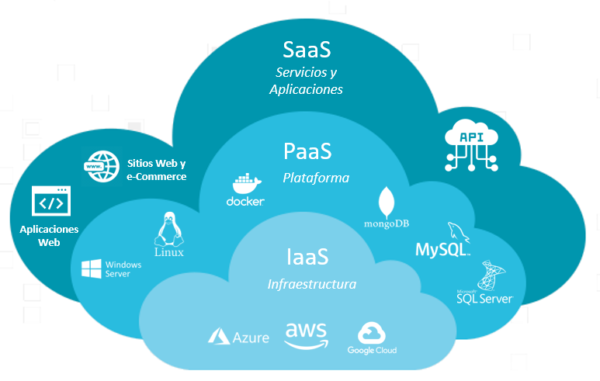
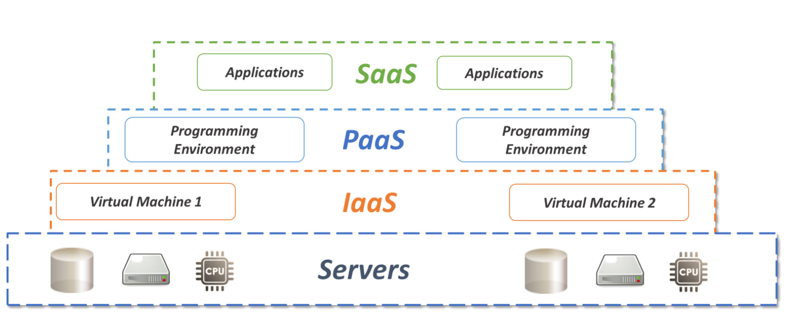
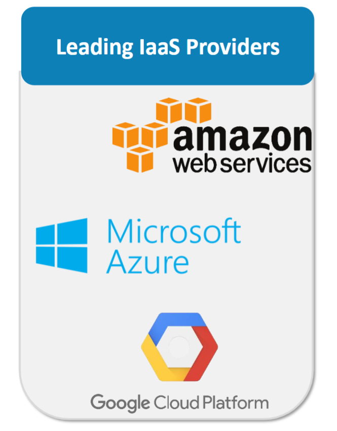
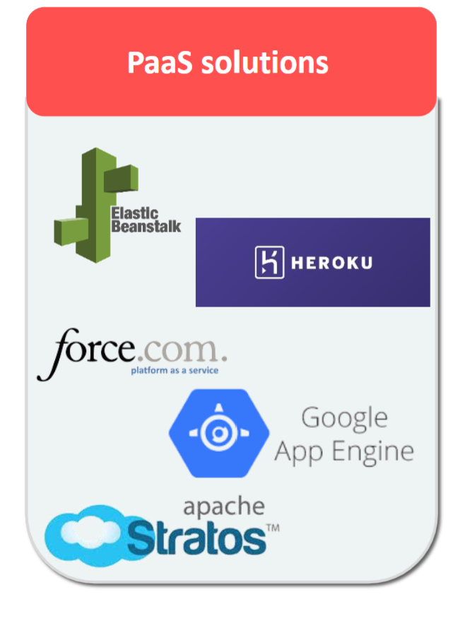
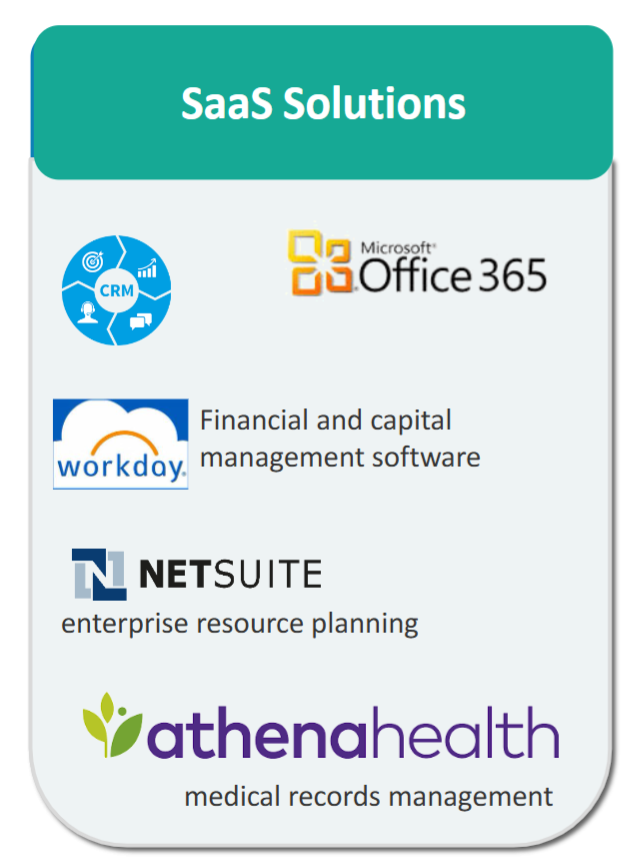
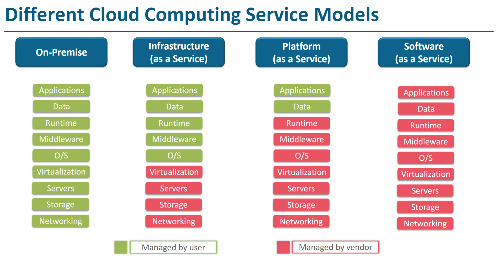

Different Cloud Service Models
Introduction
Cloud service models define what the cloud provider manages and what the customer controls.
Understanding these models helps you decide which level of control, flexibility, and responsibility is required for an application.
Here the cloud Service Models are broadly classified into three main categories: IaaS, PaaS, and SaaS.The providers offer different levels of management and control based on these models, they offer databases, Web Servers, Application Servers, messaging services, storage,networking, and more to the customers as service and customers pay them as per the use.


1️⃣ Infrastructure as a Service (IaaS)
IaaS provides basic computing infrastructure such as virtual machines, storage, and networking.
The cloud provider manages the physical hardware, while the customer manages OS, runtime, and applications.
It offers maximum flexibility and control.
IaaS is the process of providing the hardware resources as a service to run applications. By using IaaS services, customers can avoid the cost and complexity of buying and managing their own physical servers and other data center infrastructure. Each resource is offered as a separate service component, and customers only need to rent a particular one for as long as they need it.
Examples: AWS EC2, Azure Virtual Machines, Google Compute Engine
Best For: System administrators, custom architectures
📘 Exam Line: IaaS delivers virtualized computing resources over the internet.

2️⃣ Platform as a Service (PaaS)
PaaS provides a ready-made platform for application development.
Developers focus only on code while the provider manages OS, runtime, and infrastructure.
It speeds up development and reduces operational complexity.
PaaS provides a platform allowing customers to develop, run, and manage applications without the complexity of building and maintaining the infrastructure typically associated with developing and launching an app. PaaS can include tools for development, database management, business analytics, and more.
Examples: Google App Engine, Azure App Service, AWS Elastic Beanstalk
Best For: Application developers
📘 Exam Line: PaaS provides a development platform without managing infrastructure.

3️⃣ Software as a Service (SaaS)
SaaS delivers fully functional software applications over the internet.
Users simply access the application without worrying about installation or maintenance.
Everything is managed by the service provider.
SaaS is a software distribution model in which applications are hosted by a service provider and made available to customers over the internet. SaaS eliminates the need for organizations to install and run applications on their own computers or data centers, reducing the expense of hardware acquisition, maintenance, and software licensing.
Examples: Gmail, Google Docs, Salesforce, Office 365
Best For: End users
📘 Exam Line: SaaS provides ready-to-use software applications over the internet.

Service Models – Quick Comparison
IaaS: You manage applications & OS
PaaS: You manage only applications
SaaS: You only use the software

📘 Memory Trick: IaaS = Infrastructure, PaaS = Platform, SaaS = Software
Final Takeaway
Choosing the right service model depends on how much control and responsibility you want.
IaaS offers flexibility, PaaS boosts productivity, and SaaS maximizes simplicity.
A strong understanding of these models is essential for cloud architecture and exam success.